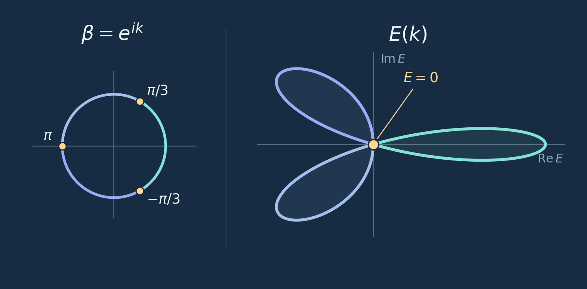

Theoretical condensed matter physics
Jinghui Pi
Assistant Professor, Guangxi University
I study how dissipation and non-Hermiticity shape wave propagation and localization in one-dimensional quantum lattices. How does a wave packet return to its starting point in a lossy ring, and why can distinct momenta share the same complex energy?

Research themes
-
Dynamics and criticality in open quantum systems
I study how dissipation shapes the decay of a local disturbance and how symmetry reveals a dissipative phase transition.
-
Non-Hermitian band topology and the skin effect
I study why complex energy spectra intersect themselves and how spatially varying loss can concentrate eigenstates at a lattice edge.
-
Phase transitions and localization in one-dimensional lattices
I study how interactions affect topological edge states and how long-range hopping drives reentrant localization in quasiperiodic lattices.